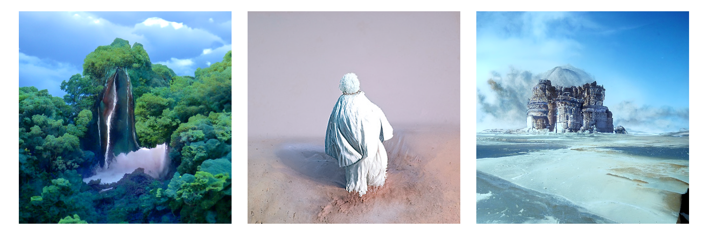

I spend some time working on artistic projects - generally linked to artificial intelligence, and digital creativity.
Artificial Forger (2021): a collection of sentences, and their corresponding images, created by Deep Learning models (sentences written by GPT-2, correspondence in image by CLIP + Guided Diffusion). Please see here for more details.
Dreamy Cops (2021): a reflexion on the ethical consequences of Artificial Intelligence - in its use for mass surveillance in public spaces. Selected at the 2021 Computer Vision Art Gallery. Created with Mathieu Rita. Please see here for more details.
Les Rondes (2019): a scenography project dealing with the notion of obsession - using cameras and screen devices. Created with Juliette Kaminski & Charlotte Peter. Please see here for more details (in French).
Welcome To My Website! (2018): a random journey in the (vanishing) world of personal webpages. Inspired by Astronaut.io. Made by Tristan Stérin, resulting from some discussions we had together. Please test it here.
Juliette (2019).